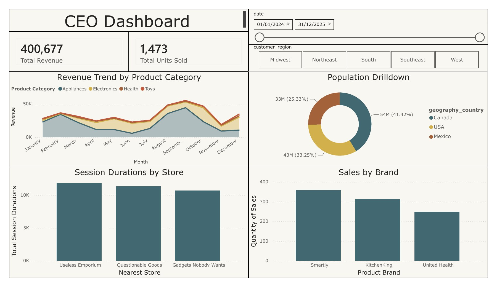
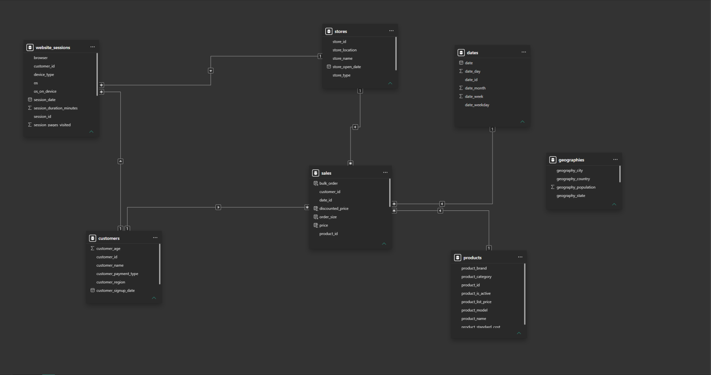
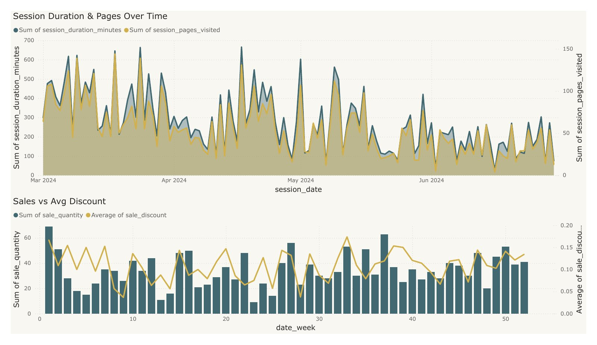

E-commerce reporting in Power BI
Boot.dev course project
Exploring sales, customer activity, and website engagement through an e-commerce reporting project.
- Power BI
- Power Query
- DAX
- Data modelling
- KPI design
- Dashboard design

The idea
Build a reporting workflow for a practice e-commerce dataset: prepare the data, connect the tables, and bring the main sales and engagement measures into one dashboard.
What I built
- Prepared and transformed data using Power Query.
- Connected sales and website-session data through shared customer and store tables, with product and date tables supporting sales analysis.
- Used DAX calculations and KPI cards to summarize revenue and units sold.
- Created trend, comparison, and breakdown visuals, then assembled an executive overview with date and region controls.
Behind the dashboard
Customer and store tables connect to both sales and website sessions. Dates and products connect to sales. The separate geography table supports the population view.

A closer look at the data
Supporting pages explore website activity over time and compare weekly sales quantities with average discounts.

What I took from it
I came away with a much better sense of how much of BI happens before the dashboard is ever built. Getting the relationships, transformations, and measures right made the visuals easier to trust, and it taught me to choose charts because they answer a useful question rather than simply because the data is available.
Project scope
This was a course project built with practice e-commerce data. The portfolio shows static exports of the Power BI report rather than an embedded live dashboard, so interactive slicers and filtering are represented through screenshots and descriptions.